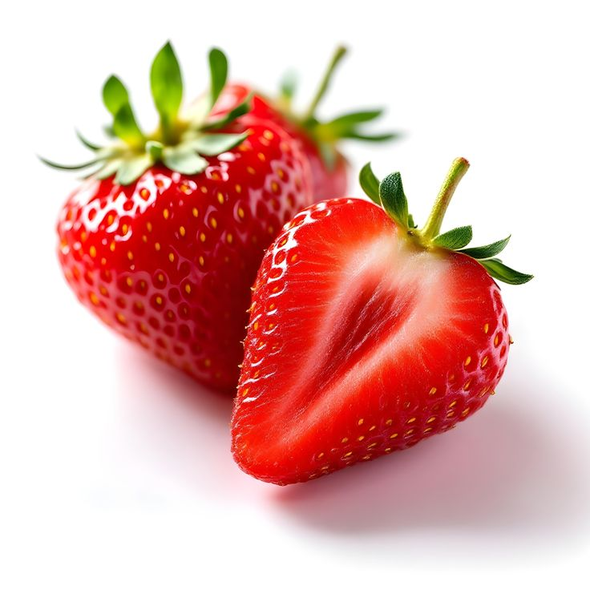

Strawberry

| Index |
|---|
| Short description |
| Nutritional value |
| Health benefits |
| Best time to eat |
| Who shoud avoid |
| Fun fact |
Short Description
Strawberry is a bright red, juicy fruit loved worldwide for its sweet taste and aroma. It is eaten fresh and used in desserts, juices, and milkshakes.
Nutritional Value
| Nutrient | Amount |
|---|---|
| Calories | 32 kcal |
| Carbohydrates | 7.7 g |
| Dietary Fiber | 2 g |
| Vitamin C | 98% |
| Manganese | High |
| Antioxidants | High |
Health Benefits
- Boosts immunity strongly
- Improves heart health
- Enhances skin glow
- Supports brain health
- Helps control cholesterol
Best Time to Eat
Strawberries are best eaten:
- In the morning
- Mid-afternoon snack
They are light and refreshing.
Avoid eating strawberries:
- Late night
- With heavy meals
Who Should Avoid
- People allergic to berries
- Those with acidity, in excess
- People on blood-thinning medication, consult doctor
Fun Fact
- Strawberry is the only fruit with seeds outside
- One strawberry has about 200 seeds
- Strawberries are members of the rose family